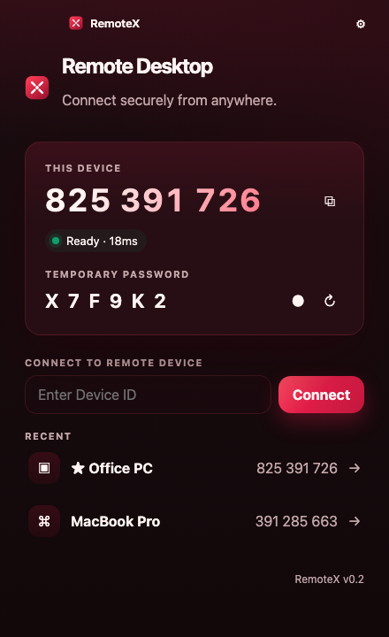
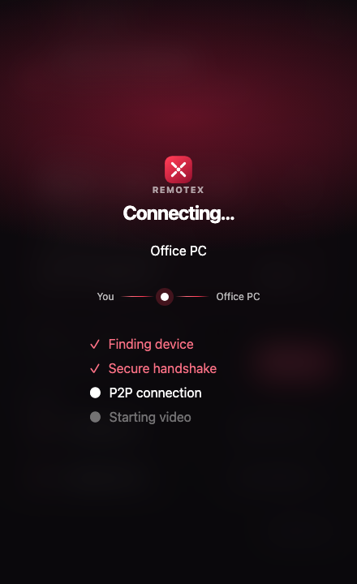
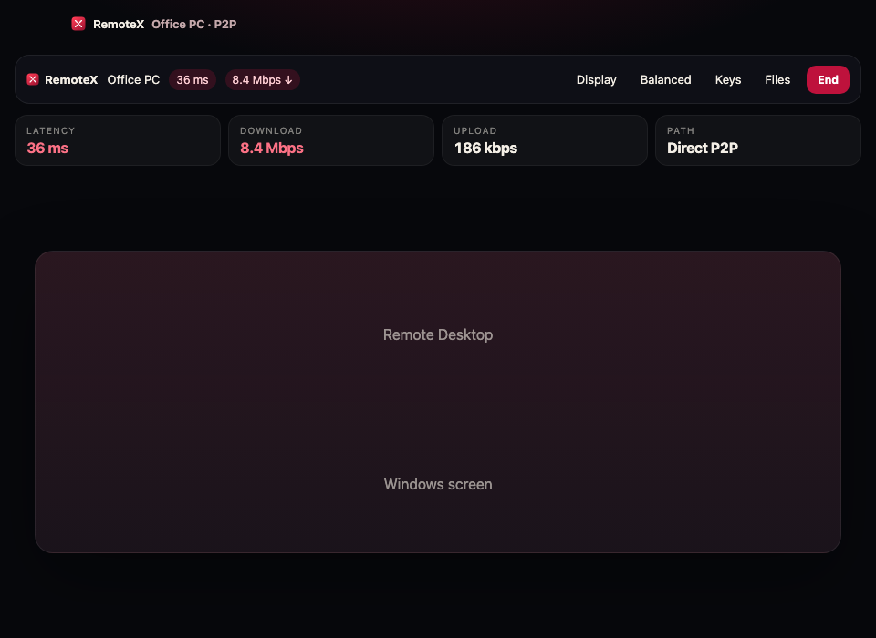
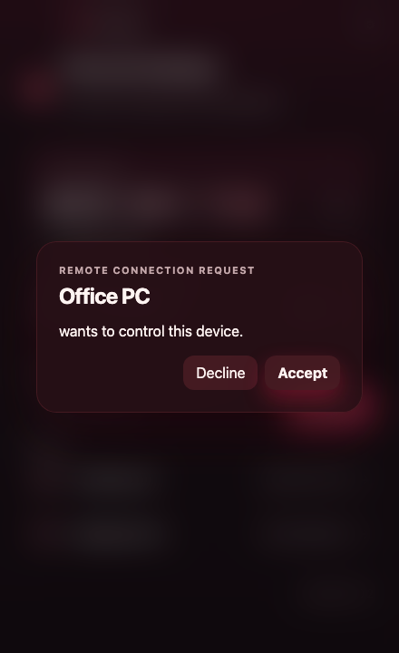

No Account
没有登录页。ID 和密码就是全部。
v0.2 · Fast Remote Desktop
无需注册，无需登录。红到骨子里的远程桌面：Windows ↔ macOS，输入设备码就能连。
No account. No setup. Just connect.

Product



没有登录页。ID 和密码就是全部。
Windows 和 macOS 互相远程，同一套红色界面。
连接后显示延迟和速度，P2P 还是 Relay 一眼能看出来。
一个窗口解决 80% 操作。复制，连接，完成。
Download
macOS
Apple Silicon 与 Intel。安装后打开即可获得设备码。
Windows
Windows 10 / 11。和 Mac 同一套界面，跨平台互相控制。